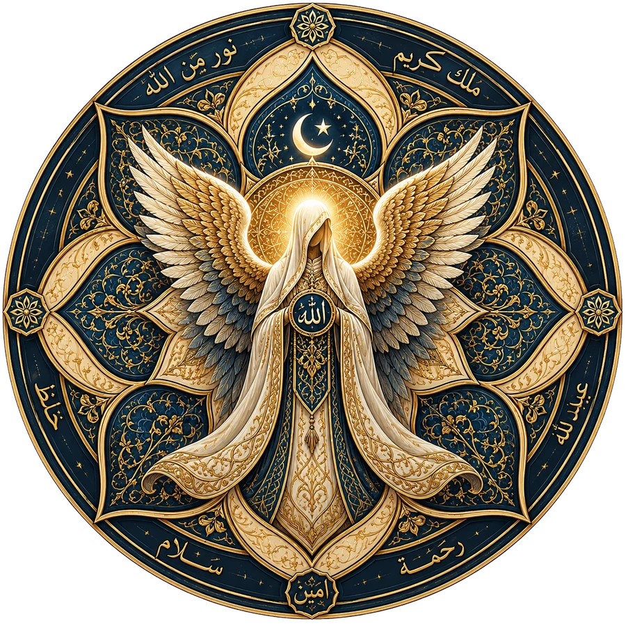
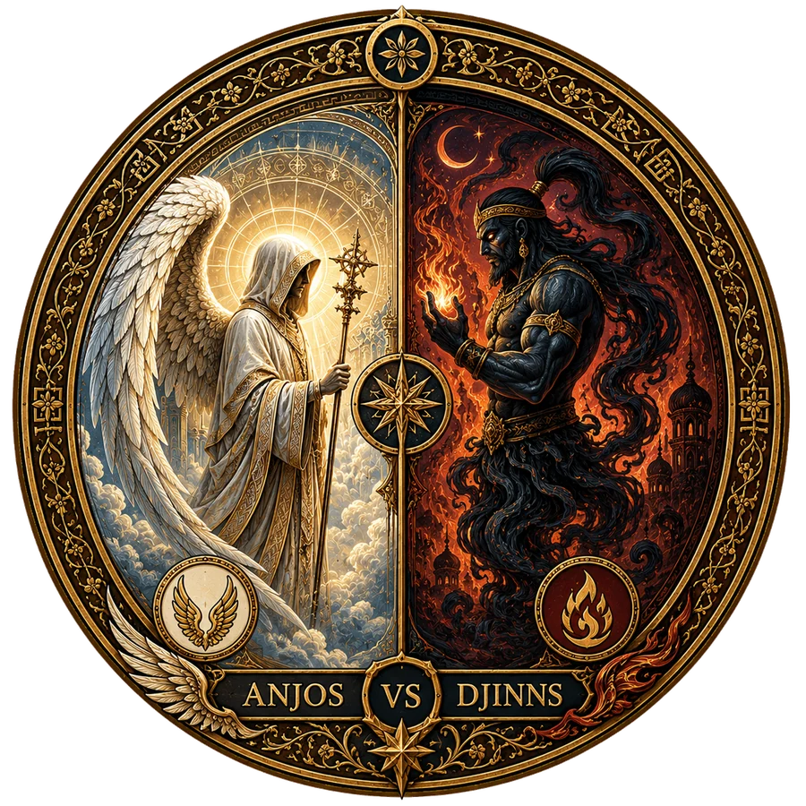

Malaika · uma tradição à parte
Anjos segundo o Islamismo
Mensageiros de luz, o segundo pilar da fé islâmica
No Islã, os anjos (malaika) são seres celestiais criados por Deus (Allah) a partir da luz, cuja função principal é adorá-lO e obedecer a todas as Suas ordens de forma absoluta. Esta tradição é independente do cânon bíblico e da apócrifa judaico-cristã apresentados na página principal — por isso ganhou um espaço próprio.
Natureza dos anjos
Principais anjos e suas missões
Distinção essencial
Anjos e jinns: naturezas diferentes

No Islã, anjos (malaika) e jinns (gênios) são criaturas de mundos invisíveis distintos, com naturezas, composições e propósitos completamente diferentes. Os demônios (shayatin) não são anjos caídos — pois anjos não podem pecar —, mas jinns rebeldes que seguiram Iblis, um jinn extremamente devoto que vivia entre os anjos e pecou por orgulho ao recusar-se a curvar-se diante de Adão, tornando-se o líder dos demônios.